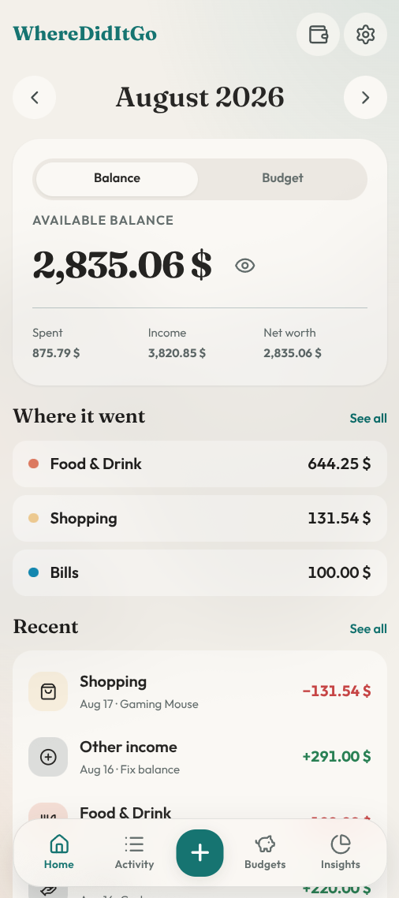

Amount-first keypad
Open +, type the amount, optionally add 13+24+50 on the keypad, then
pick category and account. Fast enough for the checkout line.
Android · local-first
Log spending in a few taps, keep simple monthly budgets, and watch savings goals fill up. Nothing is uploaded. Backup is a JSON file you own.

Transactions live in a local database on the device. There is no account to create, no cloud sync, and no analytics. Switch phones with a full JSON backup — or export transactions as CSV.
What it does
Open +, type the amount, optionally add 13+24+50 on the keypad, then
pick category and account. Fast enough for the checkout line.
Cap groceries, bills, or transport. See what’s left this month — not a lifetime envelope mixed in with savings.
A trip, a gadget, an emergency fund. Move money from an account into a goal. It is not logged as a spend, and you pick any icon you like.
Pace vs the calendar, vs last month, biggest expense, weekdays vs weekends, budget health, and per-account in/out — plus category, daily, and six-month charts.
Search notes and categories, filter by month and type, swipe left to delete. Same compact rows as Home.
One tap hides amounts behind a spoiler. It stays hidden after you leave the app — until you choose to show them again.
Stack
Vue 3, Pinia, Dexie (IndexedDB), vue-i18n, and Capacitor for Android. Light enough to reason about, offline by default.
Open source
git clone https://github.com/juraev-exe/wherediditgo.git
cd wherediditgo
npm install
npm run dev
npm run sync
Open the android/ folder in Android Studio to install on a device. ISC
licensed.